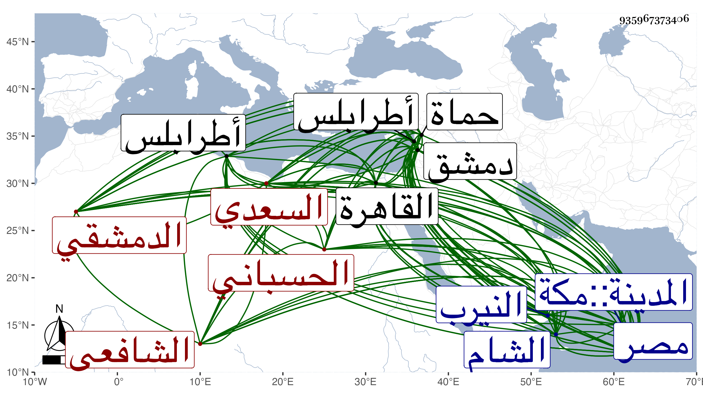

0902Sakhawi.DawLamic.ITO20230111-ara1.EIS1600.935967373406
Biography ID: 935967373406
269
عمر بن حجي بن موسى بن أحمد بن سعد النجم أبو الفتوح بن العلاء أبي محمد السعدي الحسباني الأصل الدمشقي الشافعي أخو أحمد الماضي ووالد البهاء محمد الآتي ويعرف بابن حجي . ولد في سنة سبع وستين وسبعمائة بدمشق . ومات أبوه وهو صغير فنشأ يتيما وأحضره أخوه في الثالثة على محمد بن عبد الله الصفوي جزء القزاز وحفظ القرآن عند يوسف الأعرج وصلى به على العادة في سنة اثنتين وثمانين وكذا حفظ كتبا منها التنبيه قرأه في ثمانية أشهر وعرض على جماعة وأسمعه أخوه من ابن أميلة والصلاح بن أبي عمر وغيرهما من أصحاب الفخر وغيره واستجاز له جماعة وسمع هو بنفسه واشتغل على أخيه وابن الشريشي والزهري وآخرين ، ودخل مصر سنة تسع وثمانين فأخذ عن البلقيني وابن الملقن والبدر الزركشي والعز بن جماعة وطائفة ولازم الشرف الأنطاكي في العربية مدة وأذن له ابن الملقن في الإفتاء والتدريس وولي إفتاء دار العدل في سنة اثنتين وتسعين ثم جرت بينه وبين الشهاب الباعوني في سنة أربع وتسعين أمور ثم ولي مشيخة خانكاه عمر شاه ونزل له أخوه عن إعادة الأمينية ثم ولي قضاء حماة مرتين ، وقدم القاهرة غير مرة منها سنة اللنك بعد أن نجا منهم بحيلة غريبة وناب فيها عن الجلال البلقيني ، وكذا ولي قضاء طرابلس يسيرا والشام مرارا أولها في ربيع الآخر سنة تسع وثمانمائة فكان مجموع مدة قضائه فيها إحدى عشرة سنة ، ورام القضاء بالديار المصرية فما تهيأ لكنه ولي كتابة سرها ولم تطل مدته فيها بل صرف عنها صرفا فاحشا وأخرج إلى بلده مهانا وكذا امتحن قبل ذلك مرارا ، وحج غير مرة أولها مع أخيه في سنة ست وثمانين وجاور سنة ثمانمائة وحدث بالقاهرة ومصر وغيرهما وسمع منه الأئمة كابن موسى المراكشي والأبي والقرافي وفي الأحياء من يروي عنه ، وكان حاكما صارما مقداما رئيسا ذا حرمة ومهابة قليل الاستحضار ذكيا جيد الذهن حسن التصرف فصيحا يلقى الدروس بتأن وتؤدة مع التواضع وحسن الملتقى والمباسطة وكثرة التودد لطلبة العلم والإحسان إليهم وللواردين عليه بدمشق ولأهل الحرمين غير أنه كثير التلون سريع الاستحالة حاد الخلق سريع البادرة كثير الإسراف على نفسه ، وقد ذكره شيخنا في معجمه وإنبائه والمقريزي في سلوكه وعقوده وغيرهم بما يراجع منها وطول ابن قاضي شهبة ترجمته في طبقاته وأثنى عليه بأنه حسن التصرف في العلوم إلى الغاية جيد الذهن حاد القريحة طالع شرح المحصول للأصفهاني وكتب منه كما ذكره لي أجوبة أسئلة ذكرها الأسنوي في شرحه ولم يتعرض لأجوبتها كل ذلك مع قلة استحضاره ، وقال في آخرها : ومحاسنه جمة ومناقبه كثيرة وعليه مآخذ ورحمة الله واسعة وكذا أثنى عليه ابن خطيب الناصرية وغيره ، ودرس بالشاميتين والركنية والظاهرية والغزالية وكان يتعب في دروسه بحيث يفضل فيها على أخيه لاسترواحه . وقتل وهو نائم على فراشه ببستانه من النيرب خارج دمشق في ليلة الأحد مستهل ذي القعدة سنة ثلاثين فلم تعلم زوجته به إلا وهو مضطرب في دمه ودفن من الغد بجانب أخيه بالصوفية ورؤيت له منامات حسنة تشهد لها سعة رحمة الله وكونه شهيدا رحمه الله وعفا عنه وسامحه ، وترجمته محتملة للبسط .
